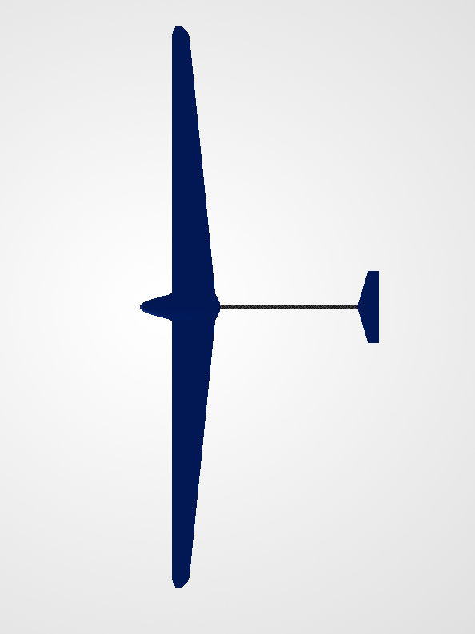

clear,clc,close all %x = [b, cr, taper, Sh, Sv, lt, V]; lb = [0.8, 0.08, 0.35, 0.05, 0.05, 0.10, 5]; ub = [3, 0.3, 0.9, 0.20, 0.10, 1.0, 30]; x0 = (lb+ub)/2; rho = 1.225; nu = 0.000015; g = 9.81; mass_fixed = .250; mass_batt = .070*16; tail_mass_per_area = .020; wing_mass_per_area = .025; boom_mass_per_length = .015; %assumptions on aero parameters Cm0 = -.05; CL_max = 1.5; eta_horz_stab = .9; e_wing = 1; e_tail = .85; fuselage_CDp = 0.0095; SM = 0.08; V_stall_MAX = 5; Mass_MAX = 5; tail_Cl_MAX = .8; margin_stall = 1.2; AR_tail_h = 5.0; AR_tail_v = 4.0; tail_Cd0 = 0.015; cg_MAC = 0.35; %optimizer parameters options = optimoptions('fmincon','Algorithm','sqp','Display','iter','MaxIterations',800,'MaxFunctionEvaluations',5000); [xOpt,fOpt,exitflag,output] = fmincon(@obj_func,x0,[],[],[],[],lb,ub,@constraints,options); yOpt = model(xOpt); fprintf('\noptimized design:\n'); disp(xOpt); function f = obj_func(x) y = model(x); f = -y(1); %maximize metric end function y = model(x) rho = 1.225; nu = 0.000015; g = 9.81; mass_fixed = .250; mass_batt = .070*16; tail_mass_per_area = .020; wing_mass_per_area = .025; boom_mass_per_length = .025; Cm0 = -.05; CL_max = 1.5; eta_horz_stab = .9; e_wing = 1; e_tail = .85; fuselage_CDp = 0.0095; AR_tail_h = 5.0; tail_Cd0 = 0.015; cg_MAC = 0.35; b = x(1); cr = x(2); taper = x(3); Sh = x(4); Sv = x(5); lt = x(6); V = x(7); ct = taper*cr; S = b*(cr+ct)/2; AR = b^2/S; cbar = (2/3)*cr*(1+taper+taper^2)/(1+taper); mass_total = mass_fixed + mass_batt + wing_mass_per_area*S + tail_mass_per_area*(Sh+Sv) + boom_mass_per_length*lt; W = mass_total*g; q = 0.5*rho*V^2; Re = max(V*cbar/nu,1e4); CL = W/(q*S); aWing = 2*pi*AR/(2+sqrt(4+AR^2)); aTail = 2*pi*AR_tail_h/(2+sqrt(4+AR_tail_h^2)); SM_actual = 0.25 + eta_horz_stab*(aTail/aWing)*(Sh/S)*(lt/cbar) - cg_MAC; Lh = (q*S*cbar*Cm0 + W*0.10*cbar)/lt; CLh = Lh/(q*Sh); Lw = W-Lh; CD0wing = 2.4*0.455/(log10(Re)^2.58); D_wingProfile = q*S*CD0wing; D_wingInduced = Lw^2/(q*pi*e_wing*b^2); D_tailProfile = q*tail_Cd0*(Sh+Sv); D_tailInduced = Lh^2/(q*pi*e_tail*AR_tail_h*Sh); D_fuselage = q*fuselage_CDp; D = D_wingProfile+D_wingInduced+D_tailProfile+D_tailInduced+D_fuselage; CD = D/(q*S); V_stall = sqrt(2*W/(rho*S*CL_max)); metric = CL^(3/2)/CD; y = [metric, mass_total, D, CL, CD, S, AR, V_stall, SM_actual, CLh]; end function [c,ceq] = constraints(x) y = model(x); mass = y(2); V = x(7); Vstall = y(8); SM_actual = y(9); CLh = y(10); c = [ mass - 5; Vstall - 5; 1.2*Vstall - V; 0.08 - SM_actual; abs(CLh) - 0.8 ]; ceq = []; end